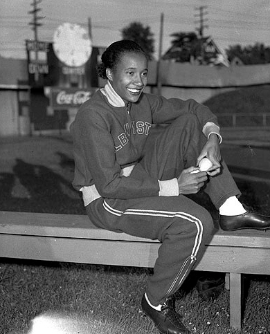

Mary Allin Travers was an American singer-songwriter and member of the folk music group Peter, Paul and Mary, along with Peter Yarrow and Paul Stookey.
Carl Sagan
Carl Edward Sagan was an American astronomer, cosmologist, astrophysicist, astrobiologist, author, science popularizer, and science communicator in astronomy and other natural sciences.
Edward VII
Edward VII was King of the United Kingdom of Great Britain and Ireland from 22 January 1901 until his death in 1910.
Viktor Brack
Viktor Hermann Brack was a German Nazi war criminal, an organiser of the euthanasia programme Action T4, where the Nazi state systematically murdered over 70,000 disabled German and Austrian people.
Florence Chadwick
Florence May Chadwick was an American swimmer known for long-distance open water swimming. She was the first woman to swim the English Channel in both directions, setting a time record each time.
Dorothy Dandridge
Dorothy Jean Dandridge was one of the most famous black actresses to have a successful Hollywood career and the first to be nominated for an Academy Award for Best Actress for her performance in the 1954 film Carmen Jones.

Alice Coachman
Alice Coachman Davis was an American athlete. She specialized in high jump and was the first black woman to win an Olympic gold medal.
Tom Fogerty
Thomas Richard Fogerty was an American musician, best known as the rhythm guitarist for Creedence Clearwater Revival. He was posthumously inducted into the Rock and Roll Hall of Fame in 1993.